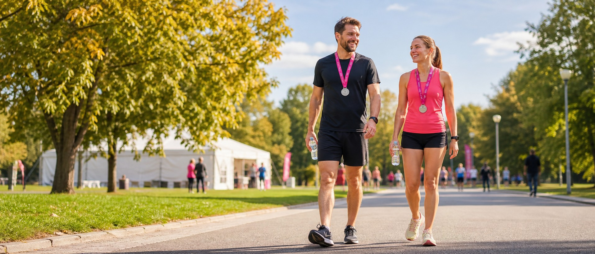

42 ВосстановлениеПосле 42,2 км: не геройствовать, а восстановиться
Первые минуты, питание, сон, мышечная боль и возвращение к бегу без универсальных сроков. С признаками, при которых нужна медицинская помощь.
Марафон не заканчивается под аркой финиша. После 42,2 км организму нужно время, чтобы вернуться к обычной нагрузке, а бегуну — понятный план без гонки за «идеальным восстановлением». В этом материале мы разбираем не подготовку и не питание на дистанции, а период, который начинается сразу после медали.
Короткий план восстановления
| Период | Главная задача | Чего не делать |
|---|---|---|
| Первые 15–30 минут | Спокойно двигаться, согреться, оценить состояние | Резко останавливаться, пить через силу |
| Первые 2 часа | Восполнить жидкость и энергию, переодеться | Экспериментировать с едой и процедурами |
| Первый вечер | Обычная еда, спокойный режим и сон | Алкоголь и баня при плохом самочувствии |
| Первые 1–3 дня | Наблюдать за симптомами, сохранять лёгкую активность | Возвращаться к интенсивному бегу |
| Последующие дни | Постепенно проверять готовность к нагрузке | Ориентироваться только на календарь |
Это последовательность действий, а не обещание восстановиться за три дня. Скорость восстановления зависит от опыта, темпа, погоды, сна, питания, состояния здоровья и того, насколько марафон отличался от привычной тренировочной нагрузки.
Сразу после финиша
Если состояние позволяет, не садитесь и не ложитесь сразу за финишной чертой. Несколько минут спокойно пройдитесь, верните дыхание к привычному ритму и только потом ищите вещи, встречайтесь с близкими и фотографируйтесь. Если кружится голова, нарушена координация или сложно стоять, не пытайтесь «расходиться» самостоятельно — обратитесь к медицинской службе финишного городка.
Снимите мокрую одежду и переоденьтесь в сухое. После остановки тело быстро остывает даже в умеренную погоду, особенно на ветру. Заранее положите в сумку свободную одежду и обувь, которые легко надеть, не наклоняясь надолго и не борясь с тугими шнурками.
Перед уходом с финиша проверьте четыре вещи: можете ли вы спокойно идти, нормально ли ориентируетесь, не нарастает ли локальная боль и получается ли пить небольшими глотками. Медаль не обязывает терпеть симптомы, которые выглядят необычно для вашей обычной усталости.
Спокойная ходьба после финиша выполняет ту же задачу, что и обычная заминка после тренировки: помогает постепенно снизить нагрузку. Подробнее о назначении и границах таких упражнений читайте в материале «Разминка и заминка для бегуна».
Питьё и питание в первые часы
После марафона нужны жидкость, углеводы и белок, но универсального меню нет. Начните с привычного напитка и еды, которые уже переносили после длительных тренировок. Подойдут, например, вода или напиток с электролитами, банан, йогурт, бутерброд, каша, рис, суп или обычный приём пищи. Специальная банка с надписью «recovery» не является обязательным условием.
Не пытайтесь быстро выпить большой объём воды «за всё потерянное». Потребность зависит от погоды, продолжительности бега, потоотделения и того, сколько вы пили на дистанции. Пейте небольшими порциями, ориентируйтесь на жажду и заранее проверенный план. Если из-за тошноты жидкость не удерживается или состояние ухудшается, нужна медицинская оценка.
В первые часы не экспериментируйте с новыми добавками, непривычными изотониками и тяжёлой едой. Желудок после марафона может реагировать иначе, чем после обычной пробежки. Задача — спокойно вернуться к нормальному питанию, а не закрыть все расчётные потери одним приёмом.
Больше о повседневном рационе и восстановительном приёме пищи есть в материале «Питание бегуна: что есть до и после пробежки». Цифры из обычной тренировки нельзя автоматически переносить на каждого марафонца.
Первый вечер и сон
К вечеру могут одновременно появиться усталость, возбуждение, снижение аппетита и озноб. Это не повод заставлять себя есть огромную порцию или пытаться уснуть немедленно. Вернитесь к спокойному режиму: тёплая сухая одежда, привычная еда небольшими порциями, приглушённый свет и минимум дел.
Сон — один из главных ресурсов восстановления. Он важнее набора модных процедур. Если мышцы мешают устроиться удобно, можно немного пройтись по комнате, принять комфортный душ и подобрать положение с подушкой под ноги. Болезненная растяжка перед сном не нужна.
Алкоголь в этот вечер лучше исключить: он мешает адекватно оценивать самочувствие и не помогает восстановить жидкость. Баню и очень горячую ванну отложите, если есть головокружение, тошнота, озноб или признаки обезвоживания. Не превращайте первый вечер в испытание ещё одной экстремальной процедурой.
Первые 24–72 часа
Мышечная болезненность может стать заметнее не сразу, а в течение следующих дней. Чаще она ощущается в нескольких работавших мышцах и постепенно меняется. Локальная нарастающая боль, выраженный отёк и изменение походки — другой сценарий, который не стоит списывать на обычную крепатуру.
Если самочувствие нормальное, лёгкая ходьба и бытовая активность обычно разумнее полного неподвижного лежания. Но «активное восстановление» не означает тренировку. Не нужно проверять форму приседаниями до отказа, интервальной работой или длинной прогулкой через боль.
Массаж, мягкий ролл, компрессионная одежда или холод могут уменьшить субъективный дискомфорт у части людей. Исследования не дают оснований обещать одинаковый эффект всем. Выбирайте процедуру ради комфорта, прекращайте её при ухудшении состояния и не используйте как разрешение раньше вернуться к нагрузке.
Растяжка после финиша и в следующие дни не обязательна. Если она приятна, движения должны оставаться мягкими и без боли. Обезболивающие и противовоспалительные препараты не стоит принимать «на всякий случай» или по совету другого бегуна. Вопрос лекарства решают с врачом с учётом симптомов и противопоказаний.
Когда можно снова бегать
Правило «один километр марафона — один день отдыха» звучит удобно, но не оценивает конкретного человека. Один бегун быстро вернётся к обычной ходьбе, другому понадобится больше времени. Календарь может быть ориентиром для планирования, но не тестом готовности.
Перед первой лёгкой пробежкой проверьте состояние:
- обычная ходьба и лестница не вызывают боли;
- нет локального отёка и изменения походки;
- сон, аппетит и общее самочувствие вернулись к привычному уровню;
- утренний пульс близок к вашей обычной величине, если вы регулярно его отслеживаете;
- короткая прогулка не усиливает симптомы в тот же день и на следующее утро.
Первая пробежка — не контрольная работа. Выберите ровный маршрут, разговорное усилие и небольшую продолжительность. Не ставьте темповую цель и оставьте возможность перейти на шаг. Если во время бега появляется боль или меняется техника, закончите тренировку.
Опытный марафонец и человек после первых 42,2 км восстанавливаются по-разному. Важны не только тренировочные годы, но и то, насколько тяжёлым оказался конкретный старт. Возвращение к лёгкому бегу ещё не означает готовность к интервалам, длительной пробежке или новому циклу.
Какие симптомы нельзя терпеть
Эта статья не ставит диагноз. Её задача — помочь не пропустить ситуацию, когда совет из интернета недостаточен. Обратитесь за медицинской помощью, если после марафона появляются:
- боль в груди, обморок, спутанность сознания или необычная одышка;
- сохраняющиеся рвота, сильное головокружение или нарушение координации;
- нарастающая локальная боль, выраженный отёк или невозможность нормально наступать на ногу;
- тёмная моча вместе с сильной мышечной болью, судорогами или выраженной слабостью.
Не ждите, что такие симптомы обязательно пройдут после сна, массажа или дополнительной воды. На финише обращайтесь к медицинской службе, позднее — к врачу или в экстренную службу в зависимости от тяжести состояния.
Психологическое восстановление
После большой цели бывает не только радость. Когда месяцы подготовки закончились, может появиться пустота, раздражение или желание немедленно найти следующий старт. Такая реакция возможна, но не обязательна и сама по себе ничего не говорит о силе характера.
В первые часы достаточно сохранить факты: что получилось, где стало тяжело, что сработало в питании и экипировке. Подробный разбор проведите позже, когда улягутся эмоции и восстановится сон. Не принимайте решение о новом марафоне только на финишном адреналине или на следующий день из-за разочарования.
Восстановление — не пауза в подготовке. Это часть нагрузки, которую марафонец планирует до старта.
Если вы готовитесь к своему первому марафону, используйте вместе с этой статьёй чек-лист последних дней до финиша и материал о длительной пробежке. Боль и тревожные симптомы требуют медицинской оценки, а не тренерского совета.
Частые вопросы
Сколько дней отдыхать после марафона?
Единого срока нет. Возвращение зависит от самочувствия, сна, обычной ходьбы, отсутствия локальной боли и реакции на лёгкую нагрузку. Календарь сам по себе не доказывает готовность к бегу.
Можно ли бегать на следующий день после марафона?
Для большинства любителей это не обязательная и не полезная проверка силы воли. Если есть боль, отёк, изменённая походка или выраженная усталость, бег откладывают. Спокойная прогулка допустима только по самочувствию.
Нужна ли растяжка сразу после финиша?
Нет. Сначала спокойно пройдитесь, оцените состояние, переоденьтесь и восстановите питьё и питание. Растяжка не должна быть болезненной и не является обязательным способом ускорить восстановление.
Помогают ли массаж, баня и холодная ванна?
Некоторые процедуры могут уменьшать субъективную болезненность, но эффект различается. При головокружении, тошноте, ознобе или признаках обезвоживания баню и горячую ванну откладывают.
Что есть и пить после марафона?
Подойдут привычные продукты и напитки, которые помогают восполнить жидкость, углеводы и белок. Не нужно быстро выпивать большой объём воды или впервые пробовать добавки сразу после финиша.
Почему после марафона сложно уснуть?
После длительной нагрузки возбуждение и дискомфорт могут сохраняться до вечера. Помогают спокойный режим, привычная еда, комфортная температура и отсутствие алкоголя. При необычных или нарастающих симптомах нужна медицинская оценка.
Как отличить обычную мышечную боль от травмы?
Обычная болезненность чаще ощущается в нескольких работавших мышцах. Локальная нарастающая боль, выраженный отёк, изменение походки или невозможность наступать на ногу требуют медицинской оценки.
Когда начинать подготовку к следующему старту?
Сначала восстановите обычную активность и лёгкий бег без ухудшения состояния. Новый тренировочный цикл планируйте после разбора прошедшего старта, а не в первые часы после финиша.
Важно: материал носит информационный характер и не заменяет консультацию врача. При хронических заболеваниях, травме или необычных симптомах план восстановления согласуют со специалистом.